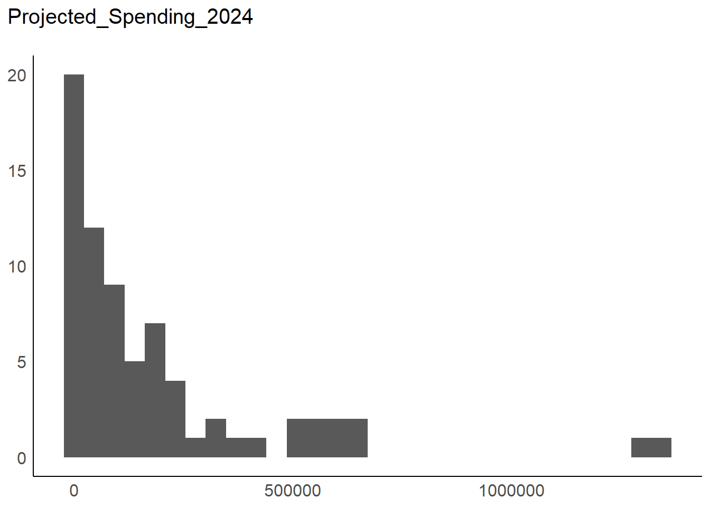
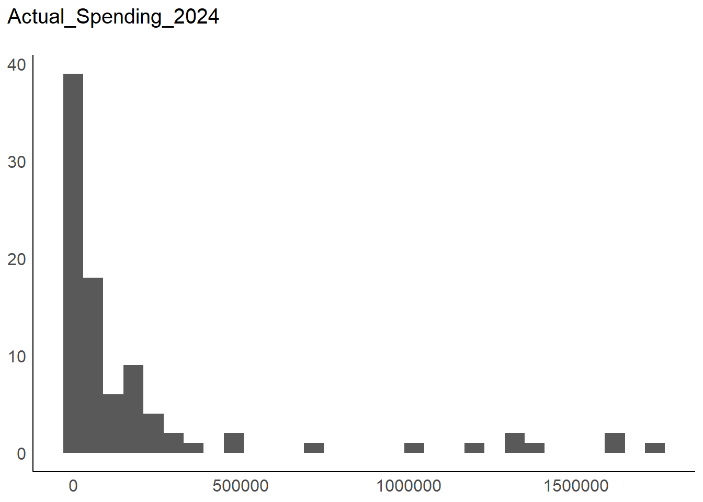
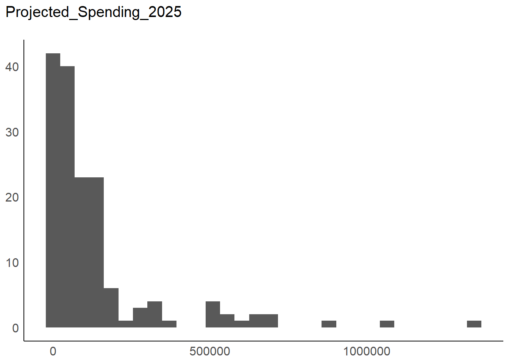
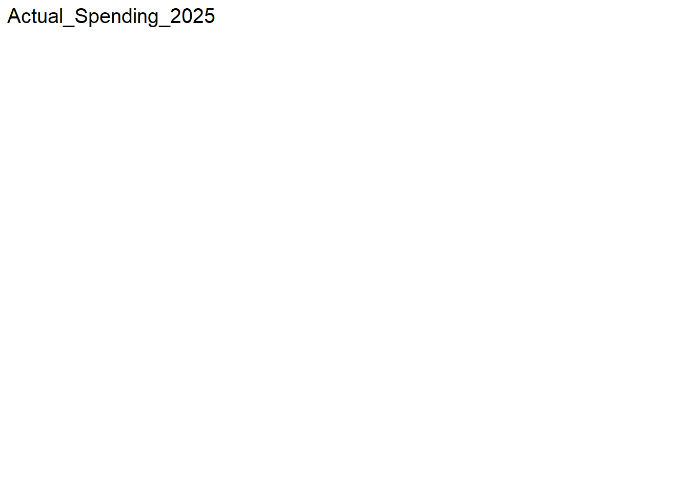
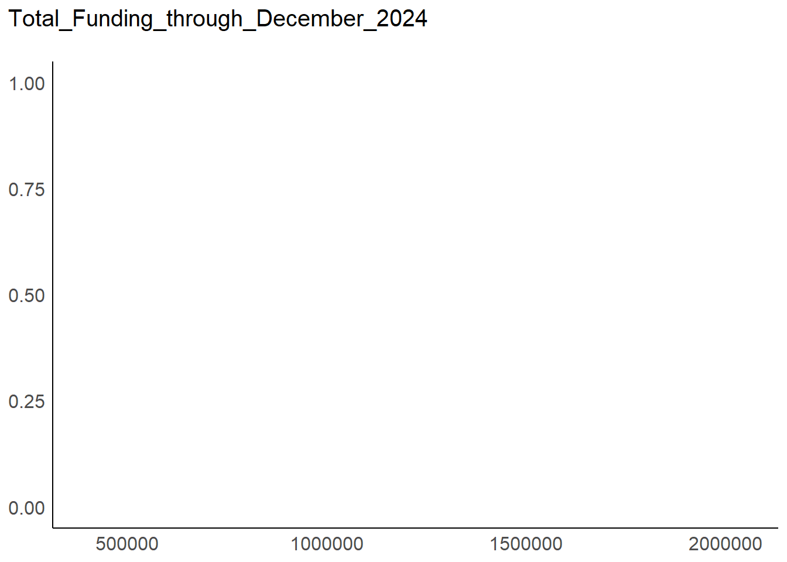

[MODIFIED] 2025-03-18
[PERIODICITY] Annually [R/P1Y]
[TEMPORAL] 2024-01-01 • 2025-12-31
[DICTIONARY] https://data.cms.gov/resources/advance-investment-payment-spend-plan-data-dictionary
[SITE] https://data.cms.gov/medicare-shared-savings-program/advance-investment-payment-spend-plan
[REFERENCES] https://data.cms.gov/resources/advance-investment-payment-spend-plan-methodology
[RESOURCES] https://data.cms.gov/data-api/v1/dataset-resources/a3d35ba1-3ff4-48dd-91b4-8e1f9e7a19b7
[DOWNLOAD] https://data.cms.gov/sites/default/files/2025-03/1d967a0a-cad3-4321-8f03-1288d493be49/Advance_Investment_Payment_Spend_PUF_March%202025.csv
9 ACO AIP Plan
The Advance Investment Payment Spend Plan data provides payment use, spending category, projected and actual spending of advanced investments payments by Accountable Care Organizations (ACOs).
Metadata
Resources
# A tibble: 3 × 5
year file size ext download
Dictionary
# A tibble: 10 × 2
field description
Data
# A tibble: 206 × 11
ACO_ID ACO_Name Payment_Use General_Spend_Category General_Spend_Subcat…¹
,
# Projected_Spending_2024 , Actual_Spending_2024 ,
# Projected_Spending_2025 , Actual_Spending_2025 ,
# Total_Funding_through_December_2024 Overview
Dataset: resp, 11 Variables, N = 206
--------------------------------------------------------------------------------
ACO_ID (character):
Statistics
N Ndist
206 29
Table
Freq Perc
A5453 21 10.19
A5499 16 7.77
A5562 16 7.77
A5411 14 6.80
A5330 13 6.31
A5374 12 5.83
A5666 11 5.34
A5713 10 4.85
A5388 8 3.88
A5495 8 3.88
A5518 8 3.88
A5521 7 3.40
A5465 6 2.91
A5335 5 2.43
... 15 Others 51 24.76
Summary of Table Frequencies
Min. 1st Qu. Median Mean 3rd Qu. Max.
2.0 3.0 5.0 7.1 10.0 21.0
--------------------------------------------------------------------------------
ACO_Name (character):
Statistics
N Ndist
206 31
Table
Freq Perc
Wellvana Essential Care LLC 21 10.19
Sunflower ACO LLC 16 7.77
TACHC Accountable Care Organization LLC 16 7.77
Health Centers of Ohio ACO LLC 14 6.80
Value Based Long Term Care LLC 13 6.31
Adventist HealthCare ACO, LLC 12 5.83
Dependable Care Partners, Select, LLC 11 5.34
VitaSavings Florida LLC 10 4.85
Medical Home Network Health Alliance II, LLC 8 3.88
VBCA NATIONAL ACO LLC 8 3.88
Medical Home Network Health Alliance I, LLC 8 3.88
Sharp Rees-Stealy Medical Group Inc 7 3.40
UF HEALTH ACO JACKSONVILLE, LLC 6 2.91
Memorial Health Partners ACO LLC 5 2.43
... 17 Others 51 24.76
Summary of Table Frequencies
Min. 1st Qu. Median Mean 3rd Qu. Max.
1.0 2.0 5.0 6.6 9.0 21.0
--------------------------------------------------------------------------------
Payment_Use (character):
Statistics (14.1% NAs)
N Ndist
177 155
Table
Freq
Salaries for Clinic-based, Patient-facing Health Navigators 7
ACO IT Infrastructure 2
ACO Training and Technical Assistance 2
ACO Administrative Support 2
ACO Legal Costs 2
Health information exchange and health information network participation 2
Electronic Quality Reporting 2
Healthcare Infrastructure 2
Staffing 2
ACO IT Costs to Measure Performance 2
Accountable Care Workflow Support 2
Care Coordination 2
Behavioral Health Case Management 2
Care Management System 2
... 141 Others 144
Perc
Salaries for Clinic-based, Patient-facing Health Navigators 3.95
ACO IT Infrastructure 1.13
ACO Training and Technical Assistance 1.13
ACO Administrative Support 1.13
ACO Legal Costs 1.13
Health information exchange and health information network participation 1.13
Electronic Quality Reporting 1.13
Healthcare Infrastructure 1.13
Staffing 1.13
ACO IT Costs to Measure Performance 1.13
Accountable Care Workflow Support 1.13
Care Coordination 1.13
Behavioral Health Case Management 1.13
Care Management System 1.13
... 141 Others 81.36
Summary of Table Frequencies
Min. 1st Qu. Median Mean 3rd Qu. Max.
1.0 1.0 1.0 1.1 1.0 7.0
--------------------------------------------------------------------------------
General_Spend_Category (character):
Statistics (14.1% NAs)
N Ndist
177 4
Table
Freq Perc
Increased Staffing 85 48.02
Health Care Infrastructure 82 46.33
Provision of Accountable Care for Underserved Beneficiaries 9 5.08
Health Information Technology 1 0.56
--------------------------------------------------------------------------------
General_Spend_Subcategory (character):
Statistics (14.1% NAs)
N Ndist
177 30
Table
Freq
Other (explain in Payment Use) 47
Other staff (explain in Payment Use) 26
Electronic Quality Reporting 14
Case/practice management systems 11
Community health worker 10
Health information exchange and health information network participation 9
Case manager 8
Other staff education (explain in Payment Use) 8
Physician 6
Clinical data registries 4
Social care coordination 4
Physician assistant, nurse practitioner, or clinical nurse specialist 3
Investment in certified electronic health record technology (CEHRT) 3
Remote access technologies/telehealth 3
... 16 Others 21
Perc
Other (explain in Payment Use) 26.55
Other staff (explain in Payment Use) 14.69
Electronic Quality Reporting 7.91
Case/practice management systems 6.21
Community health worker 5.65
Health information exchange and health information network participation 5.08
Case manager 4.52
Other staff education (explain in Payment Use) 4.52
Physician 3.39
Clinical data registries 2.26
Social care coordination 2.26
Physician assistant, nurse practitioner, or clinical nurse specialist 1.69
Investment in certified electronic health record technology (CEHRT) 1.69
Remote access technologies/telehealth 1.69
... 16 Others 11.86
Summary of Table Frequencies
Min. 1st Qu. Median Mean 3rd Qu. Max.
1.0 1.0 2.5 5.9 7.5 47.0
--------------------------------------------------------------------------------
Total_AIP_Funding_Received_through_December_2024 (character):
Statistics (90.8% NAs)
N Ndist
19 19
Table
Freq Perc
1207181 1 5.26
2050000 1 5.26
2002049 1 5.26
910167 1 5.26
651049 1 5.26
1630434 1 5.26
1393483 1 5.26
1364349 1 5.26
1464623 1 5.26
1408677 1 5.26
1735930 1 5.26
1452026 1 5.26
1803911 1 5.26
1894195 1 5.26
... 5 Others 5 26.32
Summary of Table Frequencies
Min. 1st Qu. Median Mean 3rd Qu. Max.
1 1 1 1 1 1
--------------------------------------------------------------------------------
Projected_Spending_2024 (numeric):
Statistics (65% NAs)
N Ndist Mean SD Min Max Skew Kurt
72 59 186670.49 262669.51 3000 1'345452 2.54 10.47
Quantiles
1% 5% 10% 25% 50% 75% 90% 95%
5343 8838.92 10000 17100 85752.2 227591 540810.24 625376.98
99%
1'301492.35
--------------------------------------------------------------------------------
Actual_Spending_2024 (numeric):
Statistics (56.3% NAs)
N Ndist Mean SD Min Max Skew Kurt
90 69 202192.77 402786.91 0 1'735930 2.62 8.79
Quantiles
1% 5% 10% 25% 50% 75% 90% 95% 99%
0 0 0 218.72 46038.21 177633.46 525963.17 1'334238.1 1'642038.56
--------------------------------------------------------------------------------
Projected_Spending_2025 (numeric):
Statistics (23.8% NAs)
N Ndist Mean SD Min Max Skew Kurt
157 96 133494.36 203566.43 0 1'343952 3.01 13.8
Quantiles
1% 5% 10% 25% 50% 75% 90% 95% 99%
0 500.8 7525 20000 55000 146244 327600.4 557899.52 943984.76
--------------------------------------------------------------------------------
Actual_Spending_2025 (numeric):
Statistics (100% NAs)
N Ndist Mean SD Min Max Skew Kurt
0 0 - - - - - -
Quantiles
1% 5% 10% 25% 50% 75% 90% 95% 99%
- - - - - - - - -
--------------------------------------------------------------------------------
Total_Funding_through_December_2024 (numeric):
Statistics (90.8% NAs)
N Ndist Mean SD Min Max Skew Kurt
19 19 1'353023.42 467982.5 396545 2'050000 -0.48 2.53
Quantiles
1% 5% 10% 25% 50% 75% 90%
426948.8 548564 633930.2 1'189666.5 1'393483 1'683182 1'915765.8
95% 99%
2'006844.1 2'041368.82
--------------------------------------------------------------------------------
Distribution
[[1]]

[[2]]

[[3]]

[[4]]

[[5]]
